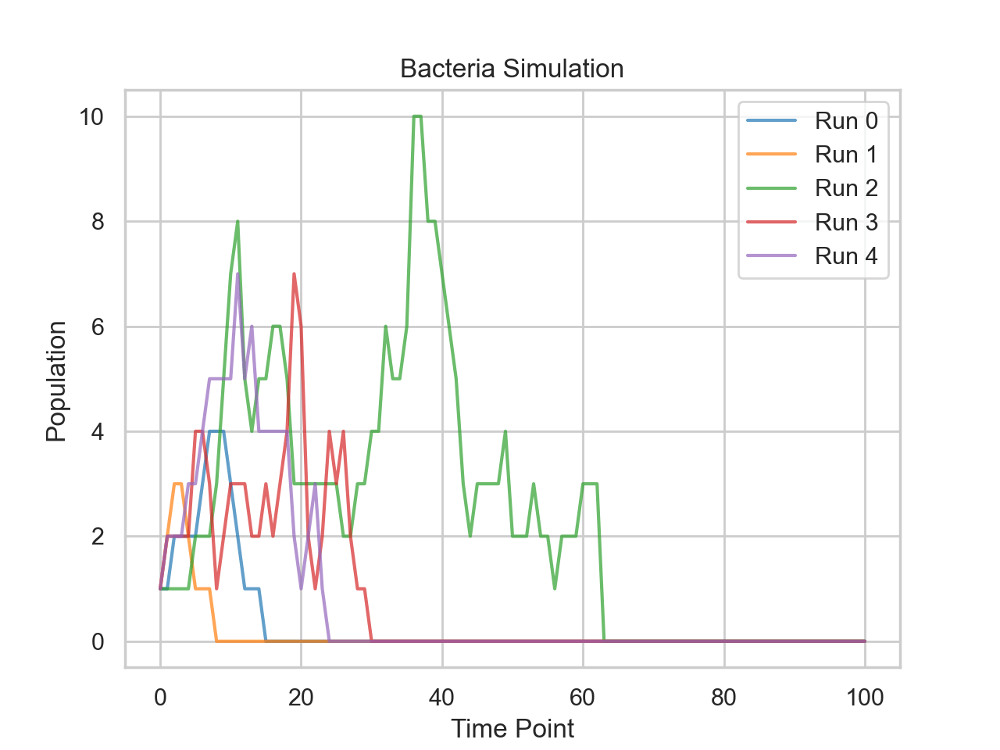

The Monte Carlo method is a broad class of computational algorithms that rely on repeated random sampling to obtain numerical results.
The basic concept is to use simulations with randomness to obtain results that may be unfeasible to obtain analytically or observationally.
Basics of Monte Carlo
Outline
Defining a domain of possible inputs.
Generating inputs randomly from a probability distribution over the domain.
Performing a deterministic computation on the inputs.
Aggregating the results
Defining A Domain of Possible Inputs
Some questions to ask:
What variables will be randomly generated?
How often will they be generated per trial?
Generating Inputs
Appropriate distribution
What distribution will each variable be sampled from?
Some common distributions for a given task:
Normal distribution: symmetric deviation from a value, with high probability of being around mean
Log-Normal distribution: Relative changes are normally distributed
Uniform distribution: Comparing versus probability threshold
Beta: Randomly generating percentages
Exponential distribution: Memory-less waiting for an event
Poisson: Number of occurences when events are independent
Half-normal distribution: Non-negative values with low kurtosis
Bernoulli: binary outcome
Binomial: repeated binary outcomes
How to Sample
For the common distributions, the sampling can be done by many libraries.
For more complicated distributions, there are techniques such as inverse transform sampling.
Sampling Techniques
There are a number of sampling techniques that can be used to reduce variance of the estimator.
Antithetic variates
Control variates
Importance sampling
Deterministic Computation
Aggregating Results
The Monte Carlo estimator has a standard deviation that scales with the inverse sequare root of n.
Basic Example
Monte Carlo is commonly introduced with estimating Pi, and we shall be no exception.
If we wished to calculate pi or determine the area of a circle, we can randomly generate points on the set \([-r,r]\times [-r,r]\).
The area of the circle would then be the percentage of points in the set \(\{x,y : x^2+y^2\leq r^2\}\) multiplied by the total area of the sample set, \((2r)^2=4r^2\).
By symmetry, we can restrict the sampling to just one quadrant and the ratio of points within the circle to the total area will be the same.
Since \(A_{c}=\pi r^2\), we can determine pi by the relationship
$$\frac{A_c}{A_s}=\frac{\pi r^2}{4 r^2}=\frac{\pi}{4}$$
Thus pi is 4 times the fraction of points inside the circle (or quartercircle or semicircle),.
import numpy as np
import matplotlib.pyplot as plt
def estimate_pi(num_samples):
inside_circle = 0
x_inside = []
y_inside = []
x_outside = []
y_outside = []
for _ in range(num_samples):
x, y = np.random.uniform(0, 1, 2) # Randomly sample point in square
if x**2 + y**2 <= 1: # Check if point is inside circle
inside_circle += 1
x_inside.append(x)
y_inside.append(y)
else:
x_outside.append(x)
y_outside.append(y)
return (4.0 * inside_circle) / num_samples, x_inside, y_inside, x_outside, y_outside
num_samples = 10000
pi_estimate, x_inside, y_inside, x_outside, y_outside = estimate_pi(num_samples)
# Plotting
plt.figure(figsize=(8,8))
plt.scatter(x_inside, y_inside, color='blue', s=1)
plt.scatter(x_outside, y_outside, color='red', s=1)
plt.title(f"Estimation of Pi using {num_samples} samples: {pi_estimate}")
plt.xlabel('x')
plt.ylabel('y')
plt.grid(True)
plt.gca().set_aspect('equal', adjustable='box')
plt.show()
import numpy as np
import matplotlib.pyplot as plt
def estimate_pi(num_samples):
inside_circle = 0
x_inside = []
y_inside = []
x_outside = []
y_outside = []
for _ in range(num_samples):
x, y = np.random.uniform(0, 1, 2) # Randomly sample point in square
if x**2 + y**2 <= 1: # Check if point is inside circle
inside_circle += 1
x_inside.append(x)
y_inside.append(y)
else:
x_outside.append(x)
y_outside.append(y)
return (4.0 * inside_circle) / num_samples, x_inside, y_inside, x_outside, y_outside
num_samples = 10000
pi_estimate, x_inside, y_inside, x_outside, y_outside = estimate_pi(num_samples)
# Plotting
plt.figure(figsize=(8,8))
plt.scatter(x_inside, y_inside, color='blue', s=1)
plt.scatter(x_outside, y_outside, color='red', s=1)
plt.title(f"Estimation of Pi using {num_samples} samples: {pi_estimate}")
plt.xlabel('x')
plt.ylabel('y')
plt.grid(True)
plt.gca().set_aspect('equal', adjustable='box')
plt.show()
Selected Applications
A classic example is modeling bacteria population.
We can start with 1 bacterium. At each time point, it has a 25% chance to split into 2, a 25% chance to die, and 50% chance to do nothing.
Using probability, you could get a closed form answer, but we can also model this easily.
We can run many simulations and take an average to see what the expected number of bacteria are at a given time.
One advantage is that we can easily change parameters and get results without having to do much work.

import numpy as np
sns.set_theme(style='whitegrid')
np.random.seed(1)
def simulate_bacteria_growth(steps=100, p_split=0.25, p_die=0.25):
population = 1 # Start with a single bacteria
populations_over_time = [population] # Storing the initial population
fates = [0,1,-1]
for _ in range(steps):
fate = np.random.choice(fates,size=population,p=[.5,.25,.25])
# Update the population
population += fate.sum()
# Ensure population doesn't go negative
population = max(0, population)
populations_over_time.append(population)
return populations_over_time
def monte_carlo_simulation(runs=1000, steps=100):
matrix = np.zeros((runs, steps+1)) # +1 to include the initial population
for run in range(runs):
matrix[run] = simulate_bacteria_growth(steps)
return matrix
steps = 100
runs = 1000
matrix = monte_carlo_simulation(runs,steps)
colors = plt.colormaps['tab10'].colors
# For visualization, let's print the first 5 simulations:
# for i in range(5):
# print(f"Simulation {i+1} populations over time: {matrix[i]}")
for i in range(5):
plt.plot(range(steps+1), matrix[i], label=f"Run {i}", linestyle='-', color=colors[i],alpha=0.7)
plt.title('Bacteria Simulation')
plt.xlabel("Time Point")
plt.ylabel("Population")
plt.legend()
plt.show()